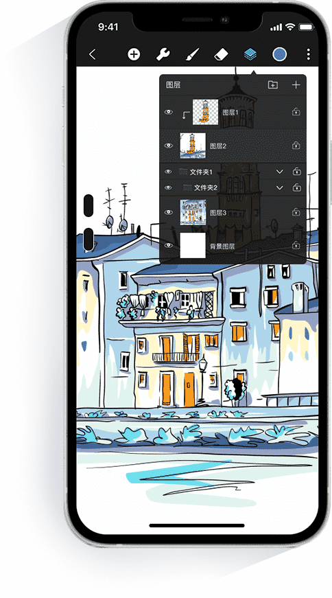

从基础涂鸦到专业创作：HiPaint 迭代五年来的进化轨迹
一款安卓绘画应用如何通过持续打磨笔刷引擎和创作自由度，从简单的涂鸦工具成长为能承接专业创作的全功能平台。
现在打开HiPaint官网上的最新版本，你会看到什么？90 多种内置笔刷整齐排列，自定义笔刷工作室允许从零或从现有笔刷迭代出完全属于自己的笔触，数位板的每一个物理按键都能重新映射成最顺手的快捷键，形状工具在对称模式下自动镜像——放在五年前，这其中任何一项单独拎出来都能算一次大更新。但站在今天回望，这些功能的出现并非偶然堆积，而是一条清晰的迭代路线在一步步兑现。
起步：为手机绘画而生的轻量尝试
HiPaint 最早的定位非常朴素——给安卓用户一个能在屏幕上画画的工具。那时候移动绘画市场的选择不多，要么是功能极简的涂鸦应用，要么是 PC 级绘画软件的阉割移植，都不太对普通用户的胃口。HiPaint 团队的切入点是：先把手机屏幕这个特定载体上的绘画体验做顺。
早期版本的功能很克制，笔刷种类有限，图层管理也是基础级别。想试试的话直接从下载拿安装包就行，体积不大。但有一个设计从第一天起就没变过——操作逻辑始终围绕着"手指在屏幕上能做什么"来组织，不把 PC 端的键盘快捷键生搬硬套过来。这个思路在后来的迭代中被反复验证，也成了 HiPaint 和其他移动绘画软件最大的差异点。
样本文档里没有详细记录前几个版本的具体变更时间线，这本身其实说明了一些东西——HiPaint 的早期迭代更多是在打磨基础体验，而不是制造大新闻。真正让它从同类中脱颖而出的转折点，出现在笔刷引擎的第一次大升级之后。
第一次跃迁：把笔刷从"工具"变成"引擎"
如果说早期 HiPaint 是在"让手机能画画"，那么引入笔刷引擎就是在"让手机能画出像样的东西"。这是一个产品定位的质变。
在那之前，笔刷在移动绘画软件里基本就是几档粗细的圆形。HiPaint 团队花了相当多的时间把笔刷系统重构了一次——不是加几种形状那么简单，而是建立了一套可调参数的引擎：形状、硬度、间距、抖动、压力曲线、纹理混合，每一项都独立可调，叠加起来能组合出的笔触数量是之前的指数倍。
这次升级的标志性变化是内置笔刷分类的出现。从气笔到像素笔，从素描铅笔到炭笔，从油画棒到材质纹理——官方不再只给"画笔"一个选项，而是把不同创作场景需要的笔刷直接喂给用户。更重要的是，团队没有止步于此，而是在引擎稳定后紧接着推出了自定义笔刷工作室：复制一款内置笔刷改参数能快速定制，从零开始用位图定义形状则能创造完全独一无二的笔触。
这套"官方打底 + 用户自造"的笔刷生态，至今仍是 HiPaint 最核心的竞争力。现在打开笔刷库，90 多种内置笔刷覆盖了从填色到素描、从像素画到复古插画的几乎所有常见场景，而社区里流传的自定义笔刷数量早已是官方内置的数倍。

补齐短板：外设与效率工具的跟进
笔刷引擎站稳脚跟之后，HiPaint 的迭代节奏明显分成了两条线：一条继续深挖笔刷参数的精细度，另一条则开始补齐专业创作不可或缺的效率工具。
数位板支持是后者最典型的例子。早期 HiPaint 虽然能识别压感，但按键映射和滚轮控制基本是摆设。团队在一次更新中把数位板的所有可配置按键列出来，允许用户自由映射到工具切换、编辑操作、视图控制、图层管理四大类操作上。滚轮默认绑定笔刷大小调节——这是桌面绘画工作流里用了十几年的经典配置——但你完全可以改成缩放画布或者切换混合模式。
这个功能的细节设计很能体现 HiPaint 的产品哲学：它不会替你决定什么是最佳方案，而是给你足够的自由度让你自己找。它的HiPaint文档里甚至专门列了一套推荐预设作为起点，但同时提供了"一键恢复默认"和"自由调整"两条路。
形状工具的加入也是类似的思路。直线、正圆、正方形、三角形这些基础几何体，在 PC 端绘画软件里早就有了，但移动端一直做得很别扭。HiPaint 给出的解法是"点按生成 + 拖拽微调"，生成后仍处于可编辑状态——拖动控制点改大小，拖中心改位置，拖边角旋转——再配合填充与描边分离、边缘平滑开关这些细节，把一个本来可能很粗糙的功能做成了能用且好用的效率工具。

迭代规律：从样本文档看团队的优先级
把四篇样本文档放在一起看，有个很有意思的共同点：它们全部围绕"笔刷引擎 + 外设效率"这两个方向展开，没有一篇涉及滤镜、调色板管理、画布分享这类其他绘画软件常见的功能模块。
这不是巧合。HiPaint 团队的迭代优先级从一开始就很明确：把画笔这件事做到极致，其他功能先让一让。笔刷引擎做了两年才稳定，自定义工作室又补了半年，数位板快捷键花了一个版本打磨映射逻辑，形状工具单独占了一个开发周期——这些功能之间没有明显的时间先后依赖，但团队始终在死磕同一个方向。
反过来看，一些用户呼声很高的功能比如滤镜面板的精细化、调色板的云同步、作品画廊的社交化整理，在样本文档里完全没有出现。这不代表这些功能不会有，更可能的情况是：团队认为笔刷引擎的潜力还没挖完，在这个核心方向上的每一分投入，都比横向铺功能的收益更大。
这个判断有它的道理。一款绘画软件的核心体验终究要落在"画的时候好不好画"上，而笔刷和外设是直接影响手感的两个变量。在这两件事上做到同类第一梯队，其他功能即使稍弱，用户也会愿意留下来。
预判：照这个路线走下去
从现在的迭代节奏推，HiPaint 短期内大概率不会突然转向做滤镜或做社区。更可能的走向是在已有的两个核心方向上继续深挖——笔刷参数的调节粒度可能会更细，自定义笔刷的导入导出体验可能会更顺畅，数位板支持可能会拓展到更多品牌和更多按键类型。
另一个可以留意的信号是形状工具里出现的"与对称模式配合"这个细节。对称模式本身是辅助绘图的一个小功能，但把它和形状工具关联起来，暗示着团队可能在构建一个"辅助绘图工具组"——形状工具、对称、网格、参考线，这些工具之间的联动可能会越来越紧密。如果这条线成立，那 HiPaint 的野心就不只是"绘画工具"，而是"完整的创作工作流"。
当然这些都只是从迭代规律推的，不当官方口径传。五年前没人能想到一个手机绘画应用能长出今天这样的笔刷引擎，五年后的 HiPaint 会变成什么样，现在也没法盖棺定论。但有一点可以确定：只要团队还在死磕画笔和手感，这款软件就值得一直盯着。